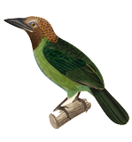

Map created by Anna Young (Yale College '16) and designed by Peter Hirsch (MEM '15 candidate)

| Expert range size | Refined range size | ||
| Total validation points | Validation points in refined range |
Tropical &
Subtropical Moist Broadleaf Forests
% protected
% of global
Biodiversity Protection Score
0% 17%